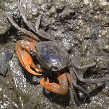
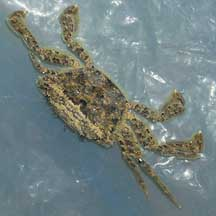

|
|
| crabs text index | photo index |
| Phylum Arthropoda > Subphylum Crustacea > Class Malacostraca > Order Decapoda > Brachyurans |
| Varunid
crabs Family Varunidae updated Dec 2019 Where seen? These crabs are seen near mangroves and freshwater streams. Features: Small crabs that are often overlooked. |
| Some Varunid crabs on Singapore shores |
 Orange signaller crab |
 Paddler crab |
| Family
Varunidae recorded for Singapore from Wee Y.C. and Peter K. L. Ng. 1994. A First Look at Biodiversity in Singapore ++from The Biodiversity of Singapore, Lee Kong Chian Natural History Museum. +Other additions (Singapore Biodiversity Records, etc)
|
Links
|